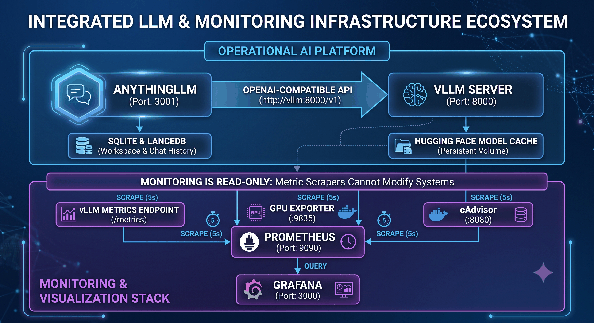

Run IBM Granite on your own GPU
with chat, agents, and monitoring built in
vLLM serves an OpenAI-compatible API for IBM Granite, AnythingLLM gives it a chat/RAG/agent
front end, and a read-only Grafana dashboard shows exactly what's happening underneath —
all wired together with one docker compose up.
Architecture
Two containers run the platform, four more watch it — none of the monitoring stack can write back to it.

What's inside
Everything needed to talk to the model, build workspaces around it, and watch it work.
OpenAI-compatible API
vLLM serves /v1/chat/completions for Granite 3.3 8B — drop it into any OpenAI-SDK-based client.
Agent-ready tool calling
--enable-auto-tool-choice with vLLM's granite parser, so AnythingLLM's Agent mode (RAG search, document tools, web scraping) works out of the box.
Full chat + RAG UI
AnythingLLM workspaces, local embeddings, and a LanceDB vector store — no external services required.
Read-only monitoring
Prometheus + GPU/container exporters feed a Grafana dashboard: throughput, latency, KV-cache usage, VRAM, RAM — anonymous, view-only access.
CPU-offload ready
--cpu-offload-gb is wired in for running larger MoE models (Mixtral, Qwen2-57B, Granite 20B) on native Linux hosts with plenty of RAM.
One-command deploy
Everything — model download, tool-calling setup, health checks, dashboards — starts with a single docker compose up -d --build.
Quick start
Full details, environment variables, and troubleshooting are in the README.
git clone https://github.com/danielesalpietro/vllm-granite.git
cd vllm-granite
# build and start vLLM + AnythingLLM
docker compose up -d --build
# optional: read-only Grafana dashboard on :3000
docker compose up -d prometheus nvidia-gpu-exporter cadvisor grafana